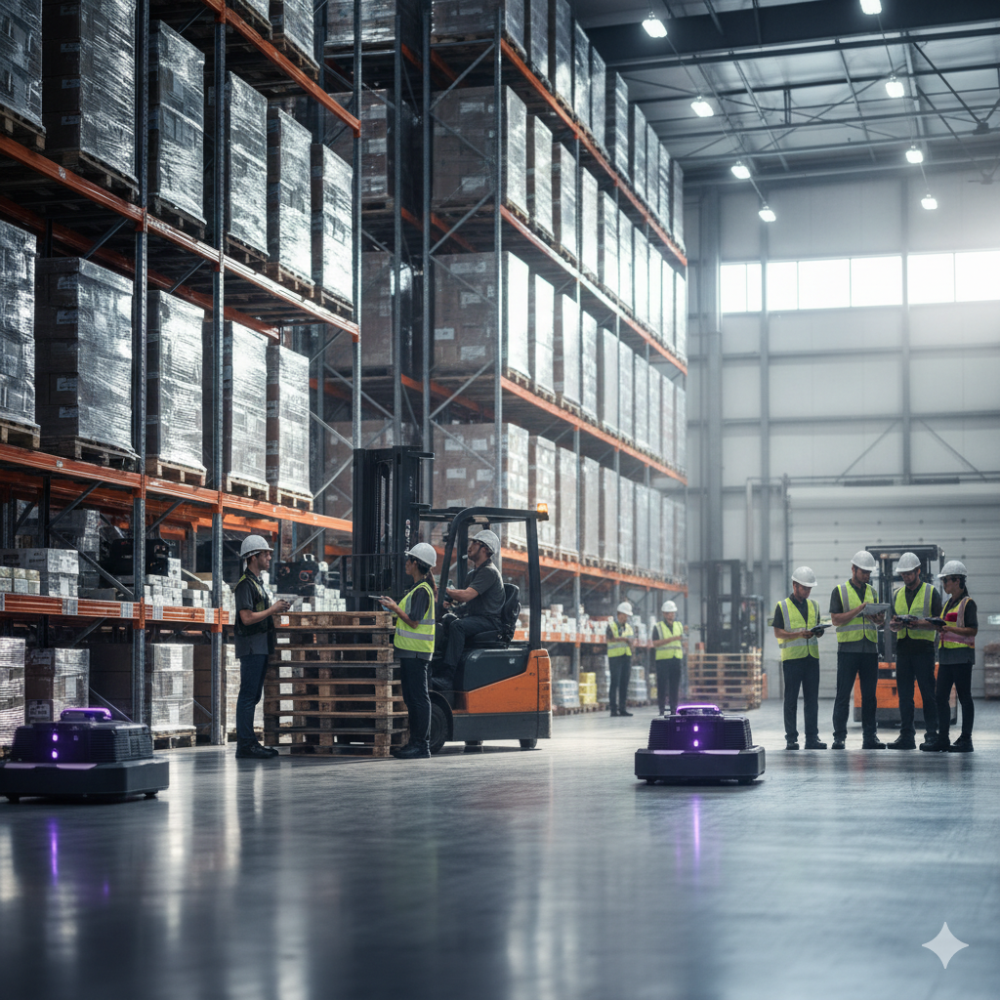

Supervisor de Logística e Analista de Estoque com mais de 10 anos de experiência em operações de armazém, liderança de equipas e otimização de processos logísticos.
Especialista em gestão de indicadores de desempenho, melhoria contínua (**Lean Six Sigma – Yellow Belt**), análise de dados com **Power BI** e **Excel avançado**. Experiência consolidada em controlo de inventário, reengenharia de processos e implementação de boas práticas de qualidade (**5S, PDCA, DMAIC**).
Focado em eficiência operacional, segurança e produtividade, com histórico de sucesso na formação, coordenação e desenvolvimento de equipas multidisciplinares em armazéns de grande porte.
Melhoria Contínua (Lean Six Sigma), Reengenharia de Processos.
Power BI, Excel Avançado, Gestão de KPIs/Indicadores de Desempenho.
Controlo de Inventário, Liderança de Equipes, Boas Práticas (5S).
Desenvolvimento de modelos de dados robustos no Excel e Power BI, garantindo a integridade da informação e permitindo a tomada de decisões **proativa e baseada em fatos**.
**Impacto:** Redução de X% no tempo de processamento manual de dados.
Liderança na automação de rotinas logísticas e de reporte utilizando Power Automate para conectar sistemas. Aumentou a **produtividade operacional** e a **confiabilidade dos dados**.
**Impacto:** Eliminação de Y horas mensais de trabalho repetitivo.
Para detalhes sobre metodologias e resultados, entre em contato.
Estou disponível para novos projetos e desafios. Envie-me uma mensagem!
Enviar E-mailOu, se preferir, entre em contato diretamente pelo WhatsApp:
WhatsApp: +351 932 096 121